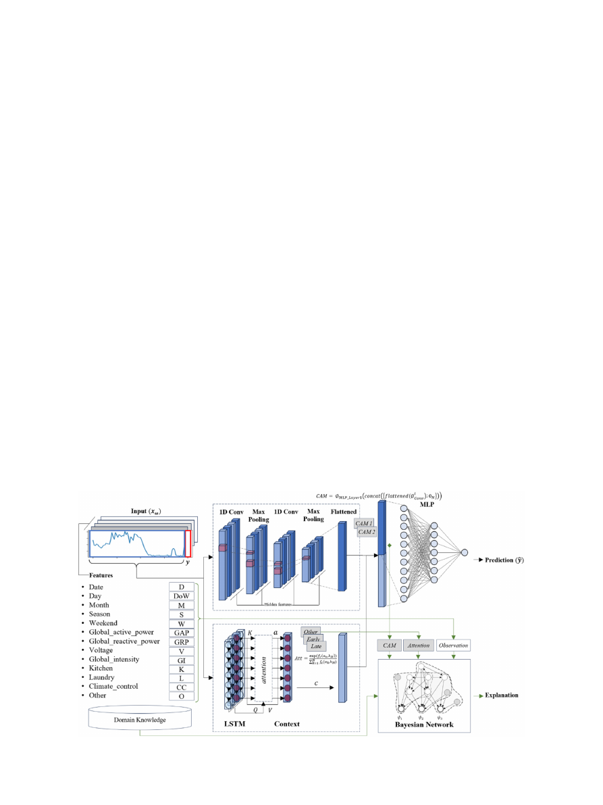
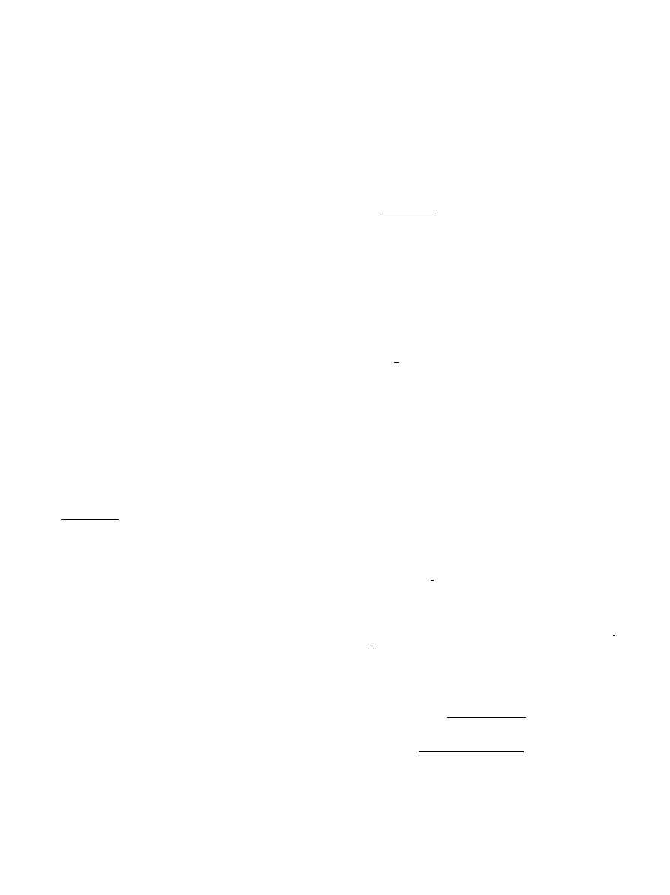
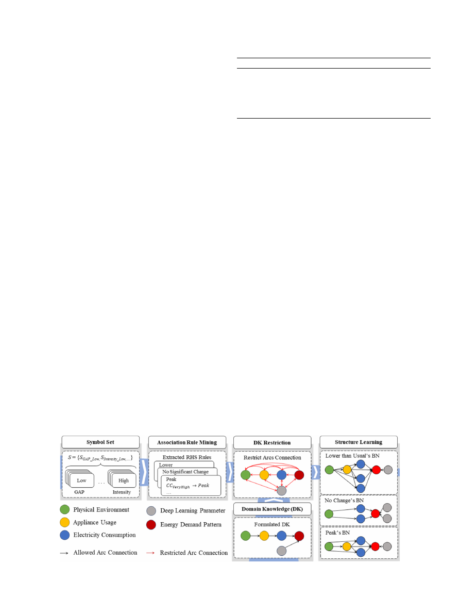
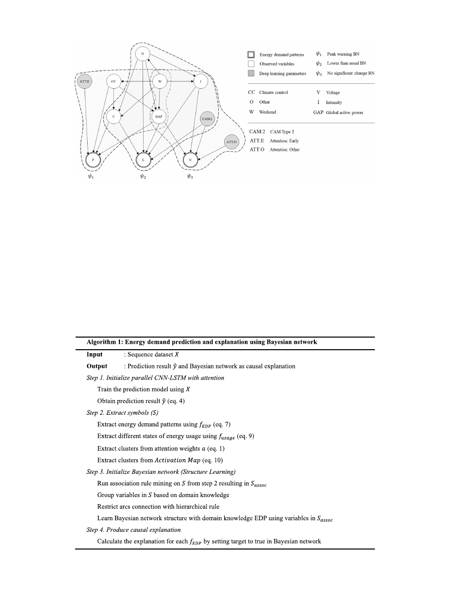
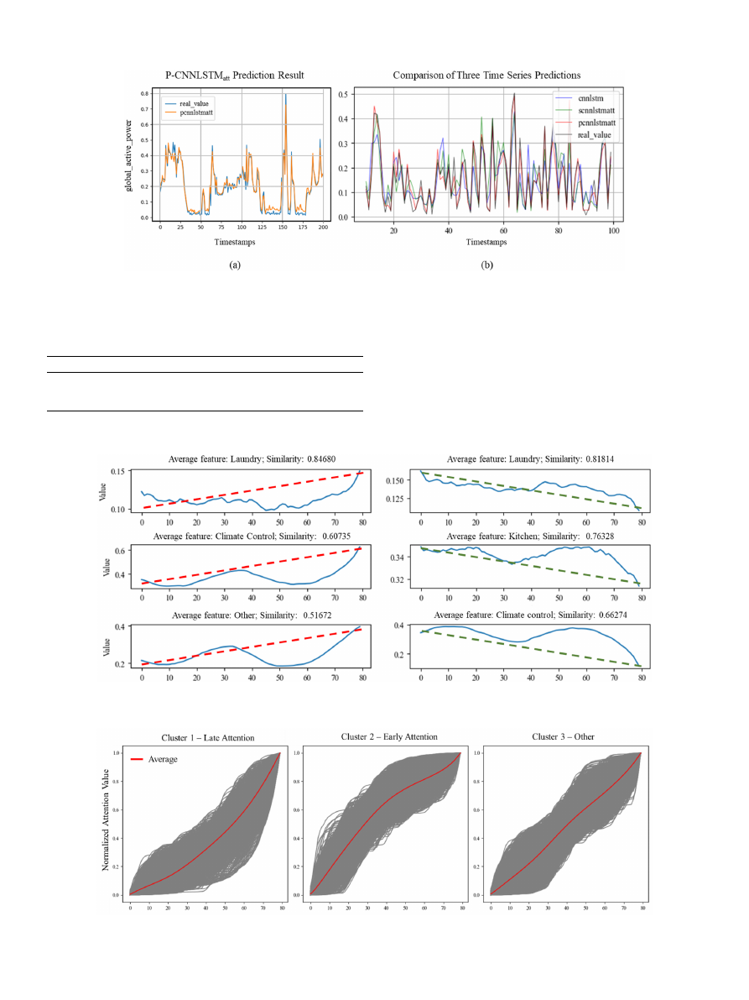
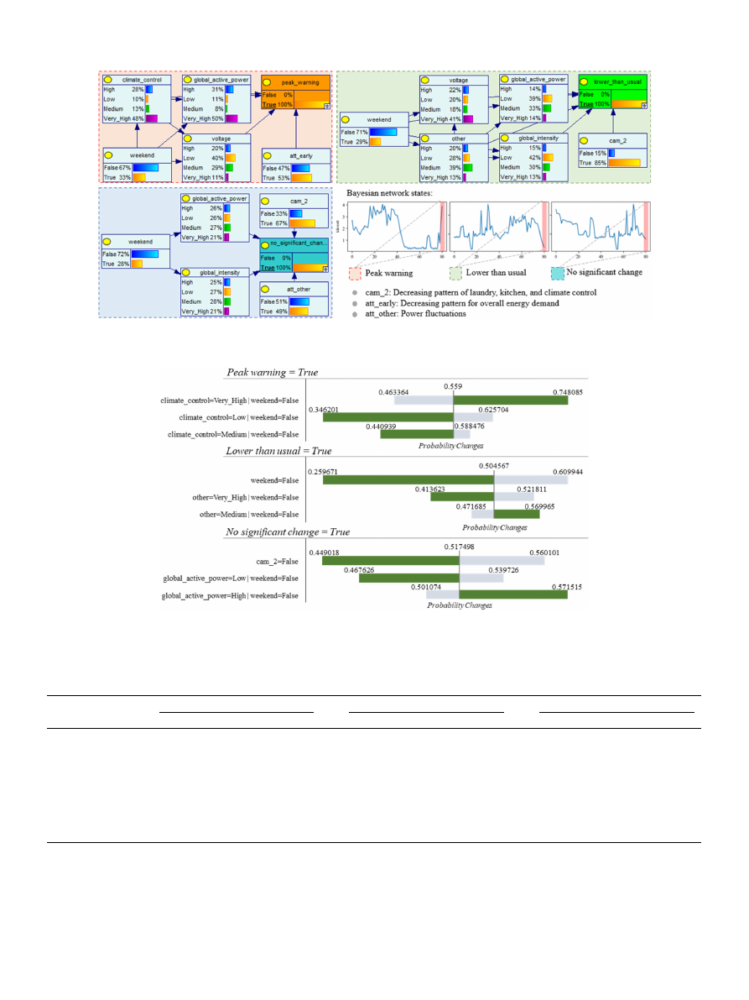
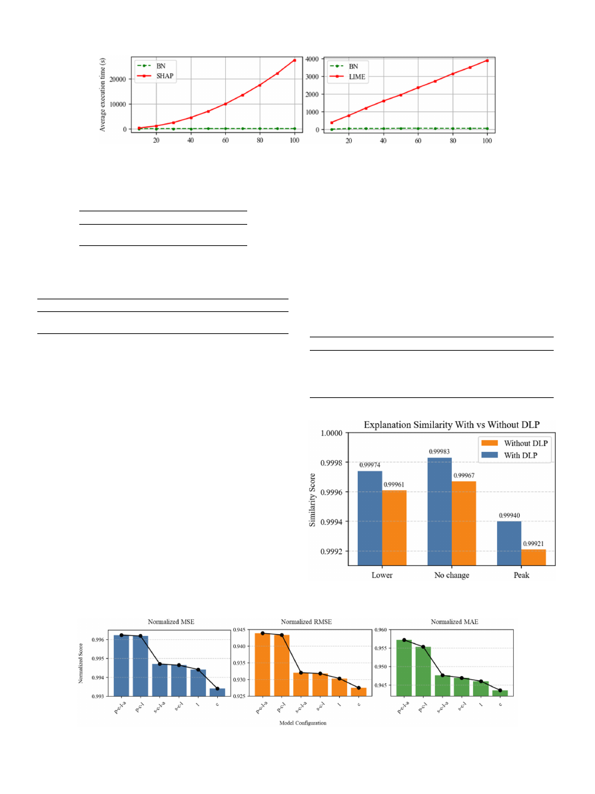
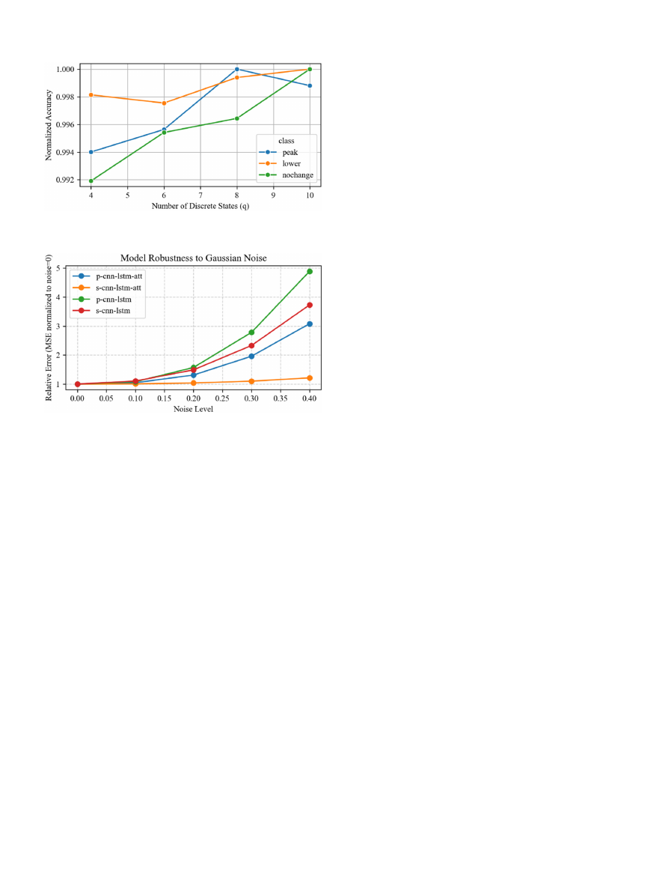

Causally explainable artificial intelligence on deep learning model for
energy demand prediction
Gatum Erlangga , Sung-Bae Cho
*
Dept. of Computer Science, Yonsei University, 50 Yonsei-ro, Sudaemoon-gu, Seoul, 03722, South Korea
A R T I C L E I N F O
Keywords:
Explainable artificial intelligence
Causal explanation
Convolutional neural network-long short-term
memory
Neural network
Bayesian network
Power demand prediction
A B S T R A C T
Accurate power demand prediction is essential for energy management in the energy sector, but it is difficult due
to the factors such as greenhouse gas emissions and climate change. CNN-LSTM (Convolutional neural network-
long short-term memory) neural network has demonstrated impressive performance but faces limitations in
explaining its prediction results. Although XAI (explainable artificial intelligence) techniques enhance under-
standing through feature importance, they primarily focus on correlation rather than causality among variables
in the deep learning models. To address this issue, we propose a causal XAI method for CNN-LSTM neural
network with attention mechanism to predict power demand. Bayesian network is employed to provide the
causal explanation with domain knowledge and relationships among observed variables and deep learning pa-
rameters (e.g., class activation maps and attention weights). Experiments on two real datasets such as UCI
(University of California, Irvine) individual household electricity dataset and REFIT (Regulatory Fitness and
Performance programme of the European Commission) dataset show improvements of average 34.84 % and
13.63 %, respectively. It also confirms that the proposed method not only significantly outperforms state-of-the-
art models in terms of prediction accuracy but also provides a causal explanation of the prediction outcome in
terms of peak power usage, savings, and stability based on the observation windows, which provides actionable
insight for end users to achieve power efficiency.
1. Introduction
Precise prediction of power demand is essential for efficient energy
management in the power sector (
Zhuang et al., 2023
;
Pinto et al.,
2021
). This is particularly crucial because electricity, unlike water or
food, cannot be easily stored and must be generated in real-time to
match demand (
Khan and Osi
´
nska, 2023
). Additionally, the need for
accurate demand forecasting has intensified due to growing concerns
over greenhouse gas emission and climate change, which drive the push
for sustainable energy management (
Rajapaksha and Bergmeir, 2022
;
Wenlong et al., 2023
). By aligning production with consumption needs,
effective demand prediction helps prevent both energy shortages and
unnecessary overproduction.
End users, particularly household occupants, play a significant role
in fossil fuel consumption and carbon emissions (
Stern et al., 2016
). One
effective strategy to encourage energy savings is by increasing their
awareness. When individuals become more conscious of their electricity
usage, they are more likely to adopt energy-efficient behaviors (
Song
and Leng, 2020
), such as adjusting indoor temperatures and turning off
unused lights and appliances. However, these behavioral adjustments
vary across different households, and their impact on overall energy
efficiency depends on multiple factors. For example, houses located in
the tropical area might have a different pattern than the four-season
area.
Understanding the key factors that drive energy demand peaks is
crucial for addressing energy challenges more effectively. Additionally,
effective energy usage prediction is essential to reducing power fluctu-
ations (
Hasan et al., 2023
), demonstrating the capability of AI-driven
system ability to meet regulatory compliance. At large scale, the gov-
ernment can integrate such predictive system into a holistic approach
for strategic decision-making, using the prediction result and the cor-
responding explanation as the consideration of future decision (
Bertoldi,
2022
).
Many researchers have worked on this problem by applying deep
learning models to predict power demand patterns in households and
receiving competitive performance metrics. Convolutional neural
network-long short-term memory (CNN-LSTM) neural network is one of
the powerful models to predict power consumption demand (
Kim and
* Corresponding author.
E-mail address:
sbcho@yonsei.ac.kr
(S.-B. Cho).
Contents lists available at
ScienceDirect
Engineering Applications of Artificial Intelligence
journal homepage:
www.elsevier.com/locate/engappai
https://doi.org/10.1016/j.engappai.2025.112620
Received 9 February 2025; Received in revised form 20 June 2025; Accepted 2 October 2025
Engineering
Applications
of
Arti cial
Intelligence
162
(2025)
112620
Available
online
10
October
2025
0952-1976/©
2025
Published
by
Elsevier
Ltd.
Cho, 2019
) that offers multivariate time series processing (
Chung and
Jang, 2022
) and spatial-temporal feature extraction (
Heo et al., 2021
;
Ijaz et al., 2022
) from the observed data. Due to its complexity, however,
it is hard to understand the underlying mechanism inside the model (
Bu
and Cho, 2023
;
Ribeiro et al., 2016a
), which sacrifices its explainability
over the accuracy (
Nagahisarchoghaei et al., 2023
).
Addressing this issue, we aim to enhance both explainability and
interpretability in predicting household energy demand using CNN-
LSTM models. According to Mavrepis, although the terms of explain-
ability and interpretability are often used interchangeably, some re-
searchers make a distinction between them (
Mavrepis et al., 2024
).
Explainability in AI refers to the extent to which a model
’
s predictions
can be understood, considering the insights provided, the target users,
and the necessity of these insights. It is derived from various methods
including textual descriptions and the significance of features. In
contrast, interpretability focuses on ensuring that the explanation aligns
with the user
’
s pre-knowledge, with the goal of making the explanation
understandable and coherent. In this paper, we define the explainability
as the ability to uncover the underlying causal mechanism that in-
fluences the model
’
s predictions. This includes uncovering relevant
patterns in the model
’
s internal decision process and its corresponding
input that affects the final output, providing global understanding.
We divide the prediction outcome after the observation window
shown in
(
t
+
1
)
time step into three states, which is useful to give
awareness on what would happen in the future when they use certain
equipment. They are: 1) peak (
Alduailij et al., 2021
) indicating a high
use of energy consumption, which enables occupants to decide whether
to use energy efficiently or keep on the high patterns depending on the
external factor, for instance, season and time of use, 2) no significant
change (
Park et al., 2018
) reflecting stable energy demand during the
observation time, which explain the stable use of energy, and 3) sig-
nificant decrease (
Shi and Jiao, 2023
) signaling a substantial reduction
in energy use, enabling occupants to enhance their energy savings,
especially after periods of peak usage. These categories are chosen to
provide more actionable insight, reduce cognitive load, enhance clarity
and usability compared to finer states, which may increase complexity
and decrease interpretability.
To provide causal explanation, we employ Bayesian network (BN) as
a tool. Contrary to other explanation methods such as SHapley Additive
exPlanations (SHAP) (
Lundberg and Lee, 2017
) and Local Interpretable
Model-Agnostic Explanations (LIME) (
Ribeiro et al., 2016b
), BN could
give insight into cause-and-effect relationships and understanding why
certain phenomena occur, which is important in various domains
(
Zhang, 2023
) including power demand prediction (
Buys et al., 2015
;
Khan, 2021
). It is constructed using association rules (
Bu and Cho, 2023
)
and structure learning for three power prediction categories. Further-
more, we analyze deep learning parameters (DLPs) to enhance inter-
pretability. While our method is applicable to any deep learning model,
in this study, we employ CNN-LSTM, one of the most widely used models
for energy prediction. Based on the model
’
s structure, we leverage class
activation maps (CAMs) and attention weights (ATTs) to explain the
factors influencing prediction results. For instance, a part of the acti-
vation map would be activated because of the increasing pattern in
climate control devices and active power. By applying both prediction
and explainability to the power consumption domain, effective con-
sumer behavior management can be achieved (
Mosannenzadeh et al.,
2017
).
The rest of this paper is organized as follows. Section
2
provides the
related works in deep learning and explainability for power demand
prediction, and Section
3
proposes a method to predict power demand
with CNN-LSTM-attention network and explain the prediction results
with Bayesian network with domain knowledge to improve its trust-
worthiness (
Tang et al., 2022
). Section
4
presents the experimental re-
sults, including model performance, deep learning parameters analysis,
and qualitative evaluation of the explanation model. Finally, Section
5
discusses experimental results and future research directions, and
Section
6
summarizes our key findings and concludes the research.
2. Related works
Understanding the key factors in model prediction is crucial (
Tjoa
et al., 2023
) and has various applications in power demand. It includes
feature selection and understanding the main point in energy usage.
Table 1
summarizes the relevant studies on explainable artificial intel-
ligence (XAI) for energy prediction, which include various prediction
models and XAI methods. In machine learning, some models have a
built-in ability to provide explanations based on the learned features.
For example, tree-structured model like decision tree and random forest
provides insight based on constructed rules to help decision making in
architectural energy efficiency (
Yao et al., 2024
) and helps determine
the key activities in energy load profiles (
Satre-Meloy et al., 2020
).
Furthermore, a new explainable model is also being proposed. For
Table 1
Related works of model explanation for energy prediction.
Explanation
Technique
Model
Objective
Dataset
Decision tree
rules
Decision tree (
Yao
et al., 2024
)
Developing a
decision tree model
to optimize zero
energy house
designs in cold
regions
China solar
decathlon
competition in
2022
SHapley
Additive
exPlanations
(SHAP)
Ensemble model (
Cakiroglu et al.,
2024
)
Predicting wind
power and
revealing feature
importance that
affects the power
production
Collected from
General
Directorate of
Meteorology at
station 17,112 for
Çanakkale
province in
Turkey
Latent variables
Autoencoder (
Kim
and Cho, 2023
)
Predicting
household power
demand with
autoencoder
architecture and
explaining with
latent variables
UCI household
dataset
Association
rule-based
modular
Bayesian
network
CNN-LSTM with
attention (
Bu and
Cho, 2023
)
Explaining power
demand prediction
by modular
Bayesian network
constructed by
association rule
mining
UCI household
dataset
SHapley
Additive
exPlanations
(SHAP)
XGBoost, SVR,
CART, LightGBM,
LSTM (
Sim et al.,
2022
)
Input selection
using XAI method
Gas heat pump
(GHP) installed in
a university
building in Seoul,
and self-collected
time and season
data
SHapley
Additive
exPlanations
(SHAP)
Artificial neural
network (ANN) (
Bia
ł
ek et al., 2022
)
Predicting heat
(climate control
device) demand
and providing
validation through
SHAP
Weather and heat
demand record
from 2015 to
2019
LIME (Local
Interpretable
Model-
agnostic
Explanations)
Elastic net
regularization,
Decision trees,
Random forest,
ANN (
Amiri et al.,
2021
)
Explaining the
effect of household
travels,
demographics, and
neighbor data on
transportation
energy
consumption
Opensource
Household Travel
Survey (HTS)
dataset
Random forest
feature
importance
Random forest (
Satre-Meloy et al.,
2020
)
Predicting load
profiles and
identifying its key
activities
Self-collected
load profiles and
activities data
G. Erlangga and S.-B. Cho
Engineering
Applications
of
Arti cial
Intelligence
162
(2025)
112620
2

example, Kim and Cho explained power conditions using latent variables
captured by an encoder-decoder architecture (
Kim and Cho, 2023
).
For a non-self-explanation model, an explanation part is added after
the result of prediction is given, which is called
post-hoc
approach
(
Theissler et al., 2022
). SHAP and LIME are popular
post-hoc
explanation
models which can be used to explain various machine learning models.
SHAP provides the ability to understand features contribution of various
prediction models in individual observation (local) and global feature
contributions meanwhile LIME only supports local explanation. Global
feature contribution is useful to understand the significant factor of
electricity demand, while local explanations provide explanations on
how certain state of energy demand contribute to the current energy
demand pattern (EDP) (
Rajapaksha and Bergmeir, 2022
).
Recent studies have significantly diversified the application of pre-
dictive models in energy demand scenarios, showing the adaptability of
XAI methods across various contexts. For instance, Cakiroglu et al.
developed an ensemble model aimed at predicting wind power and
revealing key features that impact power production, using SHAP to
highlight these important attributes (
Cakiroglu et al., 2024
). In addition,
Bialek et al. employed an artificial neural network (ANN) to forecast the
demand for climate control devices, applying SHAP to validate the
model
’
s prediction (
Bia
ł
ek et al., 2022
). Moreover, Sim et al. explored a
combination of models, including XGBoost, SVR, CART, LightGBM, and
LSTM, for input selection in energy consumption, leveraging SHAP to
enhance the explainability of their methods (
Sim et al., 2022
). These
examples demonstrate SHAP
’
s ability to provide vital explanation across
a variety of models and settings, highlighting its effectiveness in
extracting meaningful insights from complex predictive models. How-
ever, despite its robustness in explaining various models, SHAP does not
address dependency or elucidate the causal relationships between
features.
However, due to complex interactions among variables in nature, Bu
and Cho developed a Bayesian network based on association rule to
model the causal relationships (
Bu and Cho, 2023
). They combined
observed variables and deep learning parameters such as activation
maps and attention weights to explain the current state of energy de-
mand in a certain time window. Further analysis of the activation map
and attention weights is conducted to improve the interpretation of the
XAI model. Furthermore, domain knowledge is employed in the
Bayesian network structure learning process to improve the trustwor-
thiness of the structure (
Tang et al., 2022
).
3. The proposed method
We aim to endow the prediction model with explainability based on
causal relationships among variables, for which we utilize Bayesian
network to model causality. Causality could provide insight into the
underlying mechanisms of power consumption patterns. This approach
not only highlights the changes in certain aspects of energy use can
affect another but also helps in distinguishing genuine causal relation-
ships from spurious correlations (
Richman and Roberts, 2023
).
Causality, understood as the cause-and-effect relationship from
parent nodes to child nodes, is modeled within Bayesian network
through a directed acyclic graph (DAG). This relationship is inferred
through causal discovery, which assumes relationships among variables
and quantifies them using observational data (
Lu et al., 2023
;
Nogueira
et al., 2022
). In this paper, we focus on three power consumption pat-
terns: peak, no significant change, and lower than usual. With these
three representative states, we can explain the basic conditions to
household occupants at each time step when they activate certain power
states.
3.1. Overview
The method starts with CNN-LSTM neural network to predict energy
demand from time series data, as shown in
Fig. 1
. The architecture is
organized into two components, parallel CNN and LSTM modules to
extract spatial and temporal features (Section
3.2
), and causal expla-
nation module that analyzes deep learning parameters and input fea-
tures using Bayesian network (Section
3.3
). The prediction result is
categorized into one of three states, such as ‘peak warning
’
(
Alduailij
et al., 2021
), ‘no significant change
’
(
Park et al., 2018
), and ‘lower than
usual
’
(
Shi and Jiao, 2023
). Here, a statistical approach is used to detect
an outlier based on the observed window in the prediction model. By
looking at the state per window, energy demand patterns can be
extracted based on some context, particularly observation windows that
we are interested in.
The prediction triggers a Bayesian network with the causal
Fig. 1.
Overall structure of the proposed method.
G. Erlangga and S.-B. Cho
Engineering
Applications
of
Arti cial
Intelligence
162
(2025)
112620
3

relationship among features. The BN is constructed by structure learning
with association rules (
Alduailij et al., 2021
) and domain knowledge
found in the literature. All variables in the observation data are dis-
cretized to provide not only simplicity but also interpretability and
computational efficiency (
Chen et al., 2017
). Lastly, further analysis of
deep learning parameters provides to improve the interpretability of the
prediction result.
3.2. Energy prediction with CNN-LSTM with attention
We develop parallel CNN-LSTM neural network with attention to
capture spatial and temporal information separately. Temporal features
such as fluctuations and usage patterns are effectively captured by the
CNN through recognition over short-time windows and relationship
between different input features. Temporal dependencies such as long-
term trends and seasonal effects are better captured by the LSTM
through its ability to learn sequence history. As a result, this method
minimizes the abstraction after putting LSTM in front of CNN (
Zhang
et al., 2021
). Before feeding the data into the model, we adjust the
number of input sequences into observations window
ω
and target label
l
. For instance, we set
ω
into 80 timestamps, and
l
into one step ahead.
The
i
th-power consumption data are denoted as
x
i
=
{
x
i
,
1
,
…
,
x
i
,
n
}
,
where
n
is the observation window
ω
. After that, the pre-processed and
normalized data are put into both CNN and LSTM respectively.
In convolution step, we use function
∅
l
Conv
to map feature
x
into set of
feature representations learned by the convolution at layer
l
. This
function can be stacked and produce a deep convolution layer by
inserting the previous output of layer
l
into the function. In temporal
feature extraction step, we extract two components after calculating
∅
o
LSTM
as the LSTM operation. For
N
inputs, this function produces
H
=
{
h
1
, ..,
h
N
}
,
S
= {
s
1
, ..,
s
N
}
and
O
= {
o
1
, ..,
o
N
}
, as hidden state, cell state
and output of LSTM, respectively. These three components are then used
to calculate attention, a proven method to help the model pay more
attention to the specific data point, such as time series data. To obtain
the attention value of time
n,
first, we calculate the attention weights
through the function
f
c
(
o
n
,
h
N
)
, which measures the relationship between
o
n
and
h
N
.
a
n
=
exp
(
f
c
(
o
n
,
h
N
))
∑
N
k
=
1
f
c
(
o
k
,
h
N
)
,
for
t
=
1
,
…
,
T
(1)
c
n
=
∑
N
k
=
1
a
k
⋅
h
k
(2)
Using equations
(1) and (2)
, we can obtain soft attention weights and
context vectors for each time of LSTM output. To combine both
extracted representations from the parallel model, we simply concate-
nate both outputs of last layer from
∅
l
Conv
and learned context
c
N
from the
LSTM attention layer, as shown in equation
(3)
:
X
combined
=
concat
( {
flattened
(
∅
l
Conv
)
;
c
N
})
(3)
After the spatial-temporal features have been obtained, the last step
is to perform regression. Here, we use a multi-layer perceptron (MLP) to
capture knowledge from the learned representation. We map this
operation with function
∅
MLP
, which transforms
x
into prediction label
̂
y
as shown in equation
(4)
.
̂
y
=
∅
MLP
(
X
combined
)
(4)
3.3. Causal explanation with Bayesian network
Symbol Extraction
. To design the Bayesian network, we extract
symbols from the observation data by discretizing the continuous value
to improve the interpretability using two methods. First, we identify the
prediction result out of three states, peak, no significant change, and
decrease using statistical technique.
S
n
scale estimator is used for outlier
detection, which is more robust to a noisy environment (
Yaro et al.,
2024
), including the electricity domain.
S
n
scale estimator is presented
by:
S
n
=
c
*
median
m
{
median
n
{|
x
m
−
x
n
|}}
(5)
where
m
∈ {
0
,
1
, ..,
N
−
1
}
,
n
∈ {
0
,
1
, ..
N
−
1
}
,
c
=
1
.
1926, and
n
∕
=
m
.
Since
n
denotes the last observation time,
n
is
N
−
1. Given data obser-
vation at time
x
i
, median at the observation window
MED
(
X
)
, and
correction parameter
α
=
1
.
4285, the calculation of Z-score value using
S
n
(
where
n
=
i
)
can be obtained by equation
(6)
. The result is then
filtered using a threshold to obtain three different EDPs as shown in
equation
(7)
.
Z
S
n
(
x
i
) =
|
x
i
−
MED
(
X
)|
α
×
S
n
(6)
f
EDP
(
Z
S
n
(
x
i
)) =
⎧
⎨
⎩
ʹʹ
peak warning
ʹʹ
,
Z
S
n
(
x
i
)
>
threshold
and
Z
S
n
(
x
i
)
>
m
x
ʹʹ
lower than usual
ʹʹ
,
Z
S
n
(
x
i
)
>
threshold
and
Z
S
n
(
x
i
)
<
m
x
ʹʹ
no significant change
ʹʹ
,
otherwise
(7)
Next, we discretize the data into four different states of energy use,
which represent the typical use of energy from low to high (
Bu and Cho,
2023
). Quantile-based discretization is applied (equations
(8) and (9)
) to
the dataset, which has already been used to quantize energy consump-
tion data (
Martinez Lagunas et al., 2021
).
Q
r
= (
N
+
1
)
r
4
,
r
ϵ
1
,
2
,
3
(8)
f
Usage
(
x
i
) =
⎧
⎪
⎪
⎨
⎪
⎪
⎩
ʹʹ
Low
ʹʹ
,
i
≤
Q
1
ʹʹ
Medium
ʹʹ
,
Q
1
<
i
≤
Q
2
ʹʹ
High
ʹʹ
,
Q
2
<
i
≤
Q
3
ʹʹ
Very High
ʹʹ
,
i
>
Q
3
(9)
In addition, we perform data engineering to extract seasonal data
that influence other variables, such as season, day, weekend, and month.
Since deep learning model contributes directly to the prediction
result (
Cunningham et al., 2023
), we extract attention weights
a
n
from
equation
(1)
and activation map which shows the activation of certain
prediction result (
Zhou et al., 2016
). The activation is obtained using
equation
(10)
, where
0
denotes a zero vector with a length of
N
,
obtaining only the last activated convolution output. Lastly, given the
activation map and attention vector, K-means algorithm is used to get
k
groups of similar patterns (
Satre-Meloy et al., 2020
), selected using
elbow method (
Afzalan et al., 2021
;
Cen et al., 2022
).
Activation Map
=
∅
MLP Layer
1
(
concat
( {
flattened
(
∅
l
Conv
)
;
0
N
}))
,
0
N
∈
R
N
(10)
Association Rule Mining
. Next, association rule mining is con-
ducted to extract useful relationships between symbols that are used to
construct a Bayesian network. Given rule
R
and symbols
S
=
{
S
GAP Low
,
S
Intensity Low
,
…
}
, the relationship on the given symbols is shown as an if-
then rule by the left-hand side (LHS) to the right-hand side (RHS), or
LHS
→
RHS
(denoted by
R
EDP
= {
r
1
,
…
,
r
i
}
). Utilizing Apriori algorithm, it
employs confidence and lift to assess the strength of the relationship
beyond frequency.
Confidence
(
LHS
→
RHS
) =
Support
(
LHS
∪
RHS
)
Support
(
LHS
)
(11)
Lift
(
LHS
→
RHS
) =
Support
(
LHS
∪
RHS
)
Support
(
LHS
)
Support
(
RHS
)
(12)
As suggested by
Bu and Cho (2023)
, the Bayesian network is con-
structed to present causal relationships between symbols based on as-
sociation rules. In addition, this model is useful for avoiding collisions
between rules on a power demand condition. We improve it by incor-
porating domain knowledge when constructing the network for a better
G. Erlangga and S.-B. Cho
Engineering
Applications
of
Arti cial
Intelligence
162
(2025)
112620
4

interpretation. In this paper, we find causal relationships that occur in
energy demand from literature.
Structure Learning.
Bayesian network is defined by equation
(13)
,
where
N
,
e
, and
Pa
represent nodes, evidence, and parents, respectively.
The posterior probability
N
given evidence
e
is calculated by
P
(
N
|
e
)
.
Using Bayesian network, we present a causal effect of variables
A
to
B
using directed arc as
A
→
B
.
P
(
N
|
e
) =
∏
P
(
N
|
Pa
(
N
)) ×
e
=
∏
P
(
N
|
Pa
(
N
))
∏
e
i
∈
e
e
i
(13)
Determining the structure of Bayesian network is inherently chal-
lenging due to the complex interdependencies between variables.
Different structural configurations can lead to significantly different
interpretations and insights, making the choice of structure crucial for
accurate model outcomes (
Bu and Cho, 2023
). To address this issue, we
actively incorporate domain knowledge into the learning process. This
integration not only guides the structural design but also significantly
improves the interpretability of our model, ensuring that the results are
both meaningful and actionable in practical scenarios.
Fig. 2
depicts the
full pipeline of structure learning.
Buys et al. developed a structural model to identify critical factors of
peak demand from complex, interacting factors and grouped variables
by themes such as house type, physical environment, and appliances to
explain the model
’
s behavior patterns (
Buys et al., 2015
). In contrast,
Khan created a model that provides causal relationships between factors
influencing energy peak demand in two different views
—
daily and
seasonal
—
highlighting that peak demand occurs in seasonal patterns
(
Khan, 2021
). Using that knowledge, four themes are extracted from our
observed variables (
Table 2
) from UCI household dataset. The variables
are connected from physical environment
→
appliance usage
→
elec-
tricity consumption
→
peak demand. Since the DLPs contribute directly
to the prediction result based on the observation window, we assume
that every DLP has an independent connection to the peak demand.
To construct the Bayesian network using association rules and
domain knowledge, we employ a structure learning algorithm using
software Genie Academic v4.1. Our method (
Fig. 2
) differs in that we
apply domain knowledge to avoid
unusual relationships
by implementing
a
domain knowledge (DK) restriction
based on the theme. One of the re-
strictions is that the node cannot have a causal relationship direction
from child to parent based on the known DK. For instance, rather than
forming a relationship from peak warning to global active power, our
method intends to establish a relationship from global active power to
peak demand. This is achieved by prohibiting reverse connections be-
tween themed variables and by only evaluating the strength of the
connections in the appropriate manner. Furthermore, since DLPs
directly impact the prediction results, it is assumed that there is a direct
connection between DLPs and the prediction outcomes in EDPs.
Fig. 3
shows the Bayesian network designed with the extracted
symbols as mentioned previously. The network consists of three main
structures, representing three different power conditions in the
t
step
ahead after the observation window, five variable themes, twelve
observed variables, and four deep learning parameters. The Bayesian
network constructed using the rule from domain knowledge helps it
learn interpretable structures. For example, no notable change is
affected by physical environment and electricity consumption. While
the current structure reflects the characteristics of the dataset used,
deploying the model in different building types and regions may require
adjusting the network to account for regional differences in climate,
infrastructure, and consumption behavior. The Bayesian network should
be retrained or adapted with localized data and domain knowledge to
maintain the interpretability and reliability of causal explanation.
Deep Learning Parameter Interpretation
. Since our method uses
DLP to explain EDP, it is required for user to be able to interpret
S
CAM
and
S
ATT
. To interpret the DLPs, clustering analysis (
Satre-Meloy et al.,
2020
) with cosine similarity threshold are utilized to extract patterns
based on the corresponding DLP cluster. Furthermore, in the clustering
phase of
S
ATT
, instead of using raw data, the cumulative of each feature
is used to capture temporal variations in the dataset.
The
S
CAM
obtained after the clustering process contains useful in-
formation about specific power state conditions. For example, cluster
A
displays an increasing pattern in the climate control device, while
cluster
B
shows the opposite. Although this information is naturally
grouped according to similar patterns, we recognize that only several
features may exhibit consistent patterns. To identify these useful fea-
tures, we utilize cosine similarity (
Manzo-et al., 2013
) for each feature
within its cluster and then apply a threshold to filter them. These filtered
features are then analyzed and used to enhance the interpretability of
our model. Given observation data
X
c
,
f
of feature
f
at cluster
c
, the
average cosine similarity is given by:
AverageCosineSimilarity
=
Mean
(
cosine
(
x
cf
i
,
x
cf
j
))
(14)
where
i
= {
0
,
1
, ..,
N
−
1
}
,
j
= {
0
,
1
, ..,
N
−
1
}
,
i
∕
=
j
.
Fig. 2.
Structure learning with domain knowledge.
Table 2
Grouped causal themes with the corresponding observed variables.
Theme
Observed Variables
Physical environment
Date, time, season, day of week
Energy demand
pattern
Peak warning, no significant change, lower than usual
Electricity
consumption
Global reactive power, voltage, global intensity, global
active power
Appliance usage
(appliance)
Sub-metering 1 (kitchen), sub-metering 2 (laundry), sub-
metering 3 (climate control), sub-metering 4 (other)
G. Erlangga and S.-B. Cho
Engineering
Applications
of
Arti cial
Intelligence
162
(2025)
112620
5

Lastly, to get interpretable
S
ATT
, we perform cumulative clustering
proposed by Satre-Meloy et al. which is useful to extract temporal
variation of the attention vector (
Satre-Meloy et al., 2020
). To conduct
this process, at first, the attention vectors are normalized by subtracting
the minimum demand from each hourly value (referred to as
’
de-minning
’
). Then, each hour
’
s consumption is divided by the total
’
de-minned
’
consumption. Given attention vector
A
c
at cluster
c
, the
cumulative data is given by the following equation
(15)
.
C
(
A
c
) =
∑
N
i
=
1
a
i
(15)
This is applied to all features of the cluster members. Finally, the
preprocessed attention vector is clustered using K-means algorithm and
visualized for better interpretability.
To conclude,
Fig. 4
summarizes the algorithm of the proposed
method, starting with training the prediction model, symbol extraction,
Bayesian network initialization and finally returning the Bayesian
network as causal explanation framework.
4. Experimental results
4.1. Dataset
We evaluate the proposed method with two real datasets such as the
UCI individual household electricity dataset and the REFIT dataset. The
former contains 2,075,259 measurements gathered in 1-min time reso-
lution with eight attributes, such as collection time, active power,
reactive power, voltage, intensity, and four sub-meterings for kitchen,
laundry, climate control, and other appliances. The latter consists of
5,733,526 measurements, sampled with 8-s intervals. This dataset has
Fig. 3.
Bayesian network for three representative energy prediction patterns in step ahead.
Fig. 4.
The algorithm of the proposed method.
G. Erlangga and S.-B. Cho
Engineering
Applications
of
Arti cial
Intelligence
162
(2025)
112620
6

11 attributes, such as sample time, aggregate power or total load, and
nine different household appliances. In addition, feature extraction is
performed by extracting day, month, season, and weekend to improve
the prediction result with better interpretability.
4.2. Prediction accuracy
First, we compare the performance of the proposed model with other
methods. We use mean squared error (MSE), root mean square error
(RMSE), and mean absolute error (MAE) to compare the gap between
the prediction result and the real value in the time series. The lower the
value, the better the model
’
s performance.
MSE
=
1
n
∑
N
i
=
1
(
y
i
−
̂
y
i
)
2
(16)
RMSE
=
̅̅̅̅̅̅̅̅̅̅̅̅̅̅̅̅̅̅̅̅̅̅̅̅̅̅̅̅̅̅̅̅
1
N
∑
N
i
=
1
(
y
i
−
̂
y
i
)
2
√
√
√
√
(17)
MAE
=
∑
N
i
=
1
|
y
i
−
̂
y
i
|
n
(18)
We compare standalone CNN and LSTM models with other time se-
ries prediction methods and hybrid models, including the proposed
method. The experiments are conducted at a 15-min time resolution and
evaluated using multiple metrics. As shown in
Table 3
, the proposed
method not only outperforms the standalone models but also the other
model categories. This suggests that combining spatial features from
CNN and temporal features from LSTM significantly enhances energy
prediction accuracy.
Building on these findings, we compare the proposed CNN-LSTM-
attention model with state-of-the-art methods. As shown in
Table 4
,
our model consistently achieves superior performance across four
different time resolutions while maintaining statistical significance in
the
t
-test, outperforming previous models (
Kim and Cho, 2019
;
Bu and
Cho, 2020
), especially serial configuration with average 34.84 % and
13.63 % improvement in UCI and REFIT household datasets, respec-
tively. Additionally, as shown in
Fig. 5
(a), the model effectively detects
sharp peaks, which is particularly useful for addressing peak demand
issues. The improved results (
Fig. 5
(b) and
Table 4
) stem from the richer
and more detailed spatial-temporal features extracted in parallel rather
than in a serial configuration.
4.3. Explainability of prediction results
Consistency is an important aspect in explanation model (
Pillai and
Pirsiavash, 2021
) which accurately reflects the underlying reasoning of
the AI systems to build trust and ensure reliability. To assess this, we
evaluate the structure of the constructed model (
Fig. 3
) using cosine
similarity on both the training and test sets. This evaluation compares
explanation result from Partial Dependence (PD) Variance (
Greenwell
et al., 2018
), LIME, SHAP and our method, as outlined in the previous
study (
Bu and Cho, 2023
). A higher similarity indicates a consistent
model under different data conditions, suggesting consistent feature
attribution (
Lundberg and Lee, 2017
). As shown in
Table 5
, our model
consistently achieves higher similarity scores across all energy demand
conditions compared to PD Variance, LIME and SHAP. These results
further demonstrate that the proposed method is robust against
overfitting.
Interpretable Deep Learning Parameters.
We employ the clus-
tering method on the preprocessed cumulative data and select the best
cluster with the elbow method based on the within-cluster sum squares
(WCSS). A threshold is applied after measuring the similarity to identify
features that have consistent patterns.
Fig. 6
shows the clustering and
similarity measurement with threshold 0.5, with left cluster 1, and right
cluster 2 from activation map. From this result, we can conclude that the
CAM type 1 is activated because there are increasing patterns in the
laundry, climate control and other unspecified devices. Meanwhile,
CAM type 2 is activated because of the decreasing patterns in laundry,
kitchen, and climate control usages. This result is very intuitive when
used to interpret Bayesian network structure. For example, ‘lower than
usual
’
and ‘no significant change
’
are caused by CAM type 2. It indicates
that a lower consumption of power would be achieved if the household
occupants decreased their appliance usage, such as laundry, kitchen,
and climate control.
The second valuable information from deep learning parameters is
the attention vector. This vector highlights important parts of the spe-
cific time that carries more information (
Heidari and Khovalyg, 2020
).
For example, the attention vector assigns higher weights to the times
displaying an increasing pattern, rather than to those with a decreasing
pattern. Utilizing the method described in the previous section, three
clusters of attention vectors have been identified and visualized in
Fig. 7
.
Late attention highlights an increasing pattern of power usage, while
early attention indicates a decreasing trend. Meanwhile, the
’
other
’
category captures undefined patterns, potentially reflecting fluctuations
or stability in power demand.
According to the learned Bayesian network, the
’
no significant
Table 3
Comparison with other models across three different performance metrics.
Category
Method
UCI Household Dataset
Refit Dataset
MSE
RMSE
MAE
MSE
RMSE
MAE
Ensemble model
XGBoost (
Sim et al., 2022
)
0.01440
0.12000
0.08078
0.01739
0.12937
0.07820
Statistical model
ARIMA
0.01307
0.11306
0.09022
0.01582
0.12349
0.06858
Nonlinear dynamic model
SINDy (
Brunton et al., 2016
)
0.00596
0.07701
0.04701
0.03107
0.17627
0.09226
Machine learning model
SVR (
Sim et al., 2022
)
0.01839
0.13559
0.12223
0.02531
0.14981
0.10156
ANN (
Bia
ł
ek et al., 2022
)
0.00434
0.06588
0.04437
0.02010
0.14177
0.09599
CNN
0.01982
0.14077
0.11784
0.04469
0.21141
0.16713
LSTM (
Sim et al., 2022
)
0.00373
0.06102
0.03961
0.01447
0.12017
0.06464
Hybrid model
S-CNN-LSTM (
Kim and Cho, 2019
)
0.00364
0,06033
0.03895
0.01485
0.12185
0.06409
S-CNNLSTMAtt (
Bu and Cho, 2020
)
0.00330
0.05744
0.03904
0.01455
0.12062
0.06407
P-CNNLSTMAtt (Ours)
0.00307
0.05541
0.03628
0.01433
0.11971
0.06369
Table 4
Comparison of the proposed method with the other CNN-LSTM models (MSE).
Time Resolution
S-CNNLSTM
S-CNNLSTM
Att
P-CNNLSTM
Att
(ours)
UCI Household Dataset
15M
0.00364
0.00330
0.00307
30M
0.00649
0.00636
0.00431
1H
0.00797
0.00704
0.00386
1D
0.00624
0.00693
0.00312
REFIT Household Dataset
15M
0.01485
0.01455
0.01433
30M
0.00326
0.00415
0.00303
1H
0.01151
0.01143
0.00886
1D
0.01823
0.01852
0.01787
G. Erlangga and S.-B. Cho
Engineering
Applications
of
Arti cial
Intelligence
162
(2025)
112620
7

change
’
and
’
peak warning
’
EDP classifications are influenced by the
’
other
’
and
’
early
’
attention types, respectively. The first EDP state oc-
curs when power levels are stable. Interestingly, our deep learning
model captures a decreasing pattern before a peak warning occurs. This
indicates that the state of peak warning is likely to happen when overall
demand is lower, followed by a sudden jump in energy usage that in-
creases the demand. To conclude, these results show that attention
vector is important to understand common patterns that affect some
power state based on historical information (see
Table 6
for a summary
Fig. 5.
(a) Prediction performance of parallel CNN-LSTMs with attention and (b) comparison with other CNN-LSTM methods.
Table 5
Consistency comparison of our method and Shapley value to provide global
explanation using similarity measurements.
Energy Demand Pattern
PD Variance
LIME
SHAP
Ours
Lower than usual
0.80629
0.69221
0.95310
0.99974
No significant change
0.92643
0.75056
0.96091
0.99983
Peak warning
0.96062
0.70791
0.95840
0.99940
Fig. 6.
Filtered patterns of two clusters of activation maps (left: type 1, right: type 2) using average cosine similarity.
Fig. 7.
Three different patterns of attention vectors captured by cumulative clustering technique.
G. Erlangga and S.-B. Cho
Engineering
Applications
of
Arti cial
Intelligence
162
(2025)
112620
8
of DLPs interpretations).
Causal Explanations for Three EDPs
. We evaluate the compre-
hensiveness of our method (
Rajapaksha and Bergmeir, 2022
) for causal
explanation by presenting a summary of the Bayesian network and
conducting a sensitivity analysis using tornado chart. We can provide
relevant explanations and implications for household occupants, offer-
ing actionable insight to avoid peak load events, due to the global
explanation capabilities of the Bayesian network. This explanation sce-
nario is based on the energy domain, thus reflecting a real-world
approach to energy saving. The results expect to improve the domain
of consumer behavior management, enhancing both information
awareness and demand management (
Mosannenzadeh et al., 2017
).
Peak warning
.
In
Fig. 8
, early attention is expected to hit 53 %,
meaning that the global decreasing pattern would trigger a peak.
Furthermore, a very high state of global active power and climate con-
trol is observed, with probabilities of 48 % and 50 % respectively. It is
also shown that there is only a 33 % chance that weekends contribute to
the peak. The sensitivity analysis in
Fig. 9
reveals that very high usage of
climate control has the greatest influence on peak. In contrast, the low
state of climate control reduces the probability of peak warning to 34 %.
Actionable insight
: Given the high sensitivity of the peak warning state
to the usage of climate control devices, household occupants are advised
to carefully avoid setting these devices to very high levels, as this could
result in excessive power consumption.
Lower than usual
. In contrast to peak times, lower state occurs due to
an 85 % decrease in activity involving kitchen, laundry, and climate
control devices, as indicated by CAM type 2. Our model suggests that
reducing the use of these devices can significantly decrease power
consumption and lead to energy savings. This reduction is characterized
by a low intensity (42 %) and a decrease in global active power con-
sumption (39 %). Additionally, based on sensitivity analysis, our model
captures weekday and very high usage of ‘other
’
appliances as the
opposite cause of lower EDP.
Actionable insight:
Household occupants should avoid the very high
usage of ‘other
’
appliances and instead use them at medium intensity to
save energy. Additionally, by reducing the usage of kitchen, laundry,
and climate control devices, significant energy savings can be achieved.
No significant change
. Based on the Bayesian network, a stable state
of energy consumption is achieved when the global active power and
intensity are maintained at steady levels, as evidenced by the even
distribution of
low
,
medium
and
high
states. Additionally, undefined
fluctuations or stable conditions are also captured by the
’
other
’
atten-
tion category. Furthermore, a decreasing pattern of laundry, kitchen,
and climate control contributes to maintaining stable energy consump-
tion, as shown by CAM 2.
Actionable insight:
Using households
’
appliances without a sudden
jump in energy consumption will lead to stability. Similar to the lower
EDP scenario, avoiding increased usage of kitchen, laundry, and climate
control devices also help preserve this stability.
4.4. Computation overhead
In this section we provide an additional experiment to compare the
potential computation overhead produced by our explainable method
compared to SHAP and LIME. To compare the performance, we use 10
different sample sizes from 10 to 100. For the proposed method utilizing
the Bayesian Network, we calculate the time required from structure
learning to inference, while for LIME and SHAP, we compute the time
required to assign feature contributions for each sample size.
Table 7
presents the execution time results, and
Fig. 10
shows the comparison.
The results indicate that SHAP has the highest computational cost,
with execution time increasing exponentially as the sample size grows,
reaching 28,035 s (~7 h) for 100 samples. This is due to SHAP
’
s need to
generate multiple feature subsets and rerun the prediction model for
each, significantly increasing complexity (
Lundberg et al., 2020
). LIME,
while more efficient than SHAP, still requires more time than BN, as it
perturbs samples and fits a surrogate model for each prediction. In
contrast, BN remains computationally efficient, making it a scalable
alternative for explainability.
Table 8
shows the execution time of structure learning and inference
time of the Bayesian network. Structure learning is performed once on
the dataset and takes considerably more time (~433.61 s) compared to
inference, which averages 1.3 s per data instance. Moreover, the struc-
ture learning is expected to increase due to the number of data and
variables (
Huang and Suzuki, 2024
). However, since structure learning
is conducted only once during model initialization, the low inference
time makes the approach efficient and well suited for repeated real-time
queries.
In addition, we also evaluate running time on three different con-
figurations of CNN-LSTM variants, presented in section
4.2
. For this
evaluation, each model is required to predict
(
t
+
1
)
condition after
observing 80 data points from previous observation, with 1 h time res-
olution. As shown in
Table 9
, more complex models tend to have a
longer running time. Combining these results with those from
Table 4
,
an accurate model comes with the tradeoff of a higher inference time.
However, when considering inference for the next hour, the inference
time is still negligible, where it only takes approximately
¼
seconds.
4.5. Ablation study
We conduct an ablation study to evaluate the contribution of each
architectural component (
Fig. 11
) in our CNN-LSTM with attention
model.
Table 10
shows the model components. The full model (p-c-l-a)
have achieved the best performance across all metrics, demonstrating
the effectiveness of combining CNN, LSTM, and attention in parallel
configuration. Removing attention mechanism (p-c-l) leads to a slight
drop in performance, which indicates its marginal contribution. Serial-
izing the CNN and LSTM (s-c-l-a) reduces the model
’
s performance,
implying that parallel model captures better patterns and reduces the
abstraction in the serial model.
We conduct additional ablation studies on the explanation module
by removing deep learning parameters (DLPs) from the Bayesian
network. As presented in
Fig. 12
, model with DLP achieves higher
similarity score, indicating more stable and consistent explanations. It
demonstrates the positive impact of incorporating DLP into the
explanation.
Furthermore, we investigate the performance of the Bayesian
network under different discrete states after quantization (q) using
normalized accuracy. As shown in
Fig. 13
, the performance of the
Bayesian network improves slightly as the number of discrete states
increases. However, increasing the number of states may harm inter-
pretability, and explanations become harder to interpret. Therefore,
keeping the number of discrete states moderately can provide a proper
balance between accuracy and interpretability.
Table 6
Summary of deep learning parameters with their interpretation.
Deep Learning
Parameter
Meaning/Interpretation
CAM 1
Increasing
pattern of
laundry
,
climate control
, and
other
equipment
in time observation
CAM 2
Decreasing
pattern of
laundry
,
kitchen
, and
climate
control
equipment in time observation
Late Attention
Increasing
pattern for
overall energy demand
in time
observation
Early Attention
Decreasing
pattern for
overall energy demand
in time
observation
Other Attention
Stable or fluctuation
pattern for overall energy demand in
time observation
G. Erlangga and S.-B. Cho
Engineering
Applications
of
Arti cial
Intelligence
162
(2025)
112620
9

4.6. Model limitation
In this section, we explore the limitations of the proposed model.
Fig. 14
shows its performance compared to other CNN-LSTM configu-
rations with feature perturbations. We introduce noise at various levels
in the input values and measure the relative increase of prediction error.
Higher error indicates the model is prone to noise. As shown in the
figure, serial models (s-cnn-lstm-att and s-cnn-lstm) are more robust to
the noise. Furthermore, adding attention can improve the model per-
formance (p-cnn-lstm-att and s-cnn-lstm-att), implying that this
Fig. 8.
Bayesian network with activated state for each EDP.
Fig. 9.
Sensitivity analysis for the top three variables across three different power states, with the activated state set to True. Green bars represent the probability of
the power demand state after adjusting the specified variables (shown at the left side of the chart).
Table 7
Detailed execution time of ours and SHAP in seconds.
Number of samples
Peak warning
Lower than usual
No significant change
Ours
LIME
SHAP
Ours
LIME
SHAP
Ours
LIME
SHAP
10
1.33
423.18
276.10
34.84
391.60
280.24
7.96
380.81
279.86
20
1.03
825.68
1111.88
75.89
784.09
1139.26
84.19
747.14
1112.59
30
1.12
1278.01
2469.99
83.19
1194.38
2518.18
87.32
1163.26
2504.12
40
4.17
1689.97
4405.23
74.59
1586.76
4579.30
77.63
1536.23
4483.85
50
35.41
2043.63
6865.26
92.41
1905.70
7123.45
78.34
1903.77
6993.48
60
34.92
2499.03
9921.59
92.32
2287.22
10129.52
80.32
2266.80
9860.84
70
38.08
2934.85
13423.01
76.07
2662.96
13774.26
81.12
2583.06
13475.34
80
38.54
3346.10
17380.71
77.21
3111.94
17788.01
75.45
2955.13
17584.21
90
41.38
3703.97
22027.83
73.57
3493.91
22465.37
77.12
3294.90
22101.64
100
35.50
4033.92
27310.59
79.78
3868.97
28035.31
77.97
3783.67
27456.40
G. Erlangga and S.-B. Cho
Engineering
Applications
of
Arti cial
Intelligence
162
(2025)
112620
10

component plays a key role in mitigating the effect of noisy input.
5. Discussion
This study was motivated by the need for accurate and interpretable
energy demand forecasting models that can support or influence energy-
saving behavior among household occupants. Deep learning models
such as CNN-LSTM have proven effective in capturing temporal and
spatial features but lack interpretability especially in high stake do-
mains. To solve it, we have proposed a method that integrates a parallel
CNN-LSTM-attention with causal explanation which captures relation-
ship among input features, deep learning parameters and prediction
result. As a result, the proposed method not only provides accurate
prediction, but also demonstrates the ability to generate interpretable
causal explanation that can support both user understanding and
informed decision-making.
The evaluation has shown that the proposed model consistently
outperformed other time series prediction models, including baseline
CNN-LSTM-attention in serial configuration, with up to 34 % improve-
ment in prediction accuracy on the household dataset. Moreover, abla-
tion study uncovers the parallel structure with attention contributes to a
better performance than the baseline. Furthermore, the integration of
CAM and ATT enables the model to provide interpretable patterns
aligned with domain expectation. For example, reduction of appliance
usage as suggested by CAM type 2 could increase the probability of
lower energy consumption. These results highlight the effectiveness of
combining architectural innovations with a causal explanation frame-
work to improve both performance and interpretability.
Despite those findings, we acknowledge that this work has not been
explored for (
t
+
n
)
prediction setting, which indeed could introduce
both modeling and interpretability challenges. From a prediction
standpoint, longer-term forecasts require the model to effectively cap-
ture seasonal patterns, longer dependencies, and effective temporal
structure. Moreover, as the horizon extends, the feature space becomes
less certain and not directly observable, which increases the complexity
of the task. Meanwhile, in terms of causal explanation, the reliability of
Fig. 10.
Execution time comparison of SHAP (left), LIME (right), and our method across different sample sizes.
Table 8
Runtime comparison of structure learning and infer-
ence (seconds).
Step
Time
Structure learning
433.61
Inference
1.30
Table 9
Execution time comparison on different CNN-LSTM model configurations in
milliseconds (ms) with average and standard deviation.
Metrics
S-CNNLSTM
S-CNNLSTM
Att
P-CNNLSTM
Att
(ours)
Average (ms)
186.065
236.639
260.857
Stdev (ms)
2.773
14.878
9.831
Fig. 11.
Ablation study results on different model configurations.
Table 10
Description of model components.
Component
Description
p
Parallel configuration of CNN and LSTM
s
Serial configuration of CNN and LSTM
c
CNN module
l
LSTM module
a
Attention module
Fig. 12.
Ablation study results on DLP integration in Bayesian network.
G. Erlangga and S.-B. Cho
Engineering
Applications
of
Arti cial
Intelligence
162
(2025)
112620
11

explanations depends on how well the model captures meaningful and
stable features over a longer temporal context. For example, under-
standing the usage of an entire upcoming month may require seasonal
knowledge. Therefore, the model must identify features that are robust
across time, not just locally relevant at
t
.
Future work can focus on these directions: First, extending the pro-
posed method beyond one step ahead
(
t
+
1
)
forecasting to support
multi-step
(
t
+
n
)
, which requires improved handling of long-term de-
pendencies and stable generation of explanation over time. Second, it is
worth exploring the capabilities of the proposed method in the different
domains beyond household energy consumption. Lastly, the explanation
module could be used in other deep learning architecture, for example
Transformer model.
6. Concluding remarks
In this paper, we have proposed parallel CNN-LSTM with attention to
give a prediction in
(
t
+
1
)
step ahead, which outperforms the statistical,
machine learning, ensemble, and hybrid CNN-LSTM methods. Further-
more, a method to explain three energy demand prediction states using
Bayesian network is provided. We improve the interpretation of the
Bayesian network so it can be easier to understand for household oc-
cupants by incorporating domain knowledge and deep learning
parameter analysis, aligned with interpretability criteria (
Mavrepis
et al., 2024
). It is found that deep learning can capture spatial and
temporal data through parallel configuration of CNN-LSTM with atten-
tion. This separation not only increases the prediction model
’
s perfor-
mance but also improves its interpretability through further analysis.
Furthermore, we have demonstrated that our method is able to
provide explanations in the energy domain, especially in consumer
behavior management (
Mosannenzadeh et al., 2017
). This is achievable
because Bayesian networks offer various analytical tools in addition to
their structure to provide causal explanations. The proposed method
presents an innovative approach that bridges accurate forecasting and
interpretability challenge and provides actionable insight in energy
system, which is an important goal in AI for sustainability.
In the future, we plan to explore additional capabilities of the
Bayesian network, such as automated structure learning, dynamic
structure to handle new data, and extended causal explanation features.
In addition, we will improve our method so that it is not limited to a
specific domain but can have a broader impact and generalization.
Especially, in the biomedical domain, it can enhance decision-making by
providing transparent insights into patient conditions, and in industrial
domain, it can monitor and explain parameter changes in complex
system, such as gas pipelines (
Zapukhliak et al., 2019
).
CRediT authorship contribution statement
Gatum Erlangga:
Writing
–
original draft, Visualization, Method-
ology, Formal analysis, Data curation.
Sung-Bae Cho:
Writing
–
review
&
editing, Validation, Supervision, Resources, Methodology, Investiga-
tion, Funding acquisition, Formal analysis, Conceptualization.
Declaration of competing interest
The authors declare the following financial interests/personal re-
lationships which may be considered as potential competing interests:
Sung-Bae Cho reports financial support was provided by Institute of
Information
&
Communications Technology Planning
&
Evaluation and
Air Force Office of Scientific Research. If there are other authors, they
declare that they have no known competing financial interests or per-
sonal relationships that could have appeared to influence the work re-
ported in this paper.
Acknowledgments
This work was supported by the Yonsei Fellow Program funded by
Lee Youn Jae, IITP grant funded by the Korea government (MSIT) (No.
RS-2022-II220113, Developing a Sustainable Collaborative Multi-modal
Lifelong Learning Framework), and Air Force Defense Research Sciences
Program funded by Air Force Office of Scientific Research.
Data availability
Data will be made available on request.
References
Afzalan, M., Jazizadeh, F., Eldardiry, H., 2021. Two-stage clustering of household
electricity load shapes for improved temporal pattern representation. IEEE Access 9,
151667
–
151680
.
Alduailij, M.A., Petri, I., Rana, O., Alduailij, M.A., Aldawood, A.S., 2021. Forecasting
peak energy demand for smart buildings. J. Supercomput. 77, 6356
–
6380
.
Amiri, S.S., Mottahedi, S., Lee, E.R., Hoque, S., 2021. Peeking inside the black-box:
explainable machine learning applied to household transportation energy
consumption, Computers. Environment and Urban Systems 88, 101647
.
Bertoldi, P., 2022. Policies for energy conservation and sufficiency: review of existing
policies and recommendations for new and effective policies in OECD countries.
Energy Build. 264, 112075
.
Bia
ł
ek, J., Bujalski, W., Wojdan, K., Guzek, M., Kurek, T., 2022. Dataset level explanation
of heat demand forecasting ANN with SHAP. Energy 261, 125075
.
Brunton, S.L., Proctor, J.L., Kutz, J.N., 2016. Discovering Governing Equations from Data
by Sparse Identification of Nonlinear Dynamical Systems, 113. Proceedings of the
national academy of sciences, pp. 3932
–
3937
.
Bu, S.-J., Cho, S.-B., 2020. Time series forecasting with multi-headed attention-based
deep learning for residential energy consumption. Energies 13, 4722
.
Bu, S.-J., Cho, S.-B., 2023. A causally explainable deep learning model with modular
Bayesian network for predicting electric energy demand. In: 18th Int. Conf. on
Hybrid Artificial Intelligence Systems, pp. 519
–
532
.
Buys, L., Vine, D., Ledwich, G., Bell, J., Mengersen, K., Morris, P., Lewis, J., 2015.
A framework for understanding and generating integrated solutions for residential
peak energy demand. PLoS One 10, e0121195
.
Cakiroglu, C., Demir, S., Ozdemir, M.H., Aylak, B.L., Sariisik, G., Abualigah, L., 2024.
Data-driven interpretable ensemble learning methods for the prediction of wind
turbine power incorporating SHAP analysis. Expert Syst. Appl. 237, 121464
.
Fig. 13.
Normalized model performance under different discrete states.
Fig. 14.
Experiment results of model robustness to noise.
G. Erlangga and S.-B. Cho
Engineering
Applications
of
Arti cial
Intelligence
162
(2025)
112620
12
Cen, S., Yoo, J.H., Lim, C.G., 2022. Electricity pattern analysis by clustering domestic
load profiles using discrete wavelet transform. Energies 15, 1350
.
Chen, Y.-C., Wheeler, T.A., Kochenderfer, M.J., 2017. Learning discrete Bayesian
networks from continuous data. J. Artif. Intell. Res. 59, 103
–
132
.
Chung, J., Jang, B., 2022. Accurate prediction of electricity consumption using a hybrid
CNN-LSTM model based on multivariable data. PLoS One 17, e0278071
.
Cunningham, H., Ewart, A., Riggs, L., Huben, R., Sharkey, L., 2023. Sparse autoencoders
find highly interpretable features in language models. arXiv preprint arXiv:
2309.08600
.
Greenwell, B.M., Boehmke, B.C., McCarthy, A.J., 2018. A simple and effective model-
based variable importance measure. iv Preprint arXiv:1805.04755
.
Hasan, M., Mifta, Z., Salsabil, N.A., Papiya, S.J., Hossain, M., Roy, P., Farrok, O., 2023.
A critical review on control mechanisms, supporting measures, and monitoring
systems of microgrids considering large scale integration of renewable energy
sources. Energy Rep. 10, 4582
–
4603
.
Heidari, A., Khovalyg, D., 2020. Short-term energy use prediction of solar-assisted water
heating system: application case of combined attention-based LSTM and time-series
decomposition. Sol. Energy 207, 626
–
639
.
Heo, J., Song, K., Han, S., Lee, D.-E., 2021. Multi-channel convolutional neural network
for integration of meteorological and geographical features in solar power
forecasting. Appl. Energy 295, 117083
.
Huang, H., Suzuki, J., 2024. An efficient procedure for computing bayesian network
structure learning. arXiv preprint arXiv:2407.17072
.
Ijaz, K., Hussain, Z., Ahmad, J., Ali, S.F., Adnan, M., Khosa, I., 2022. A novel temporal
feature selection based LSTM model for electrical short-term load forecasting. IEEE
Access 10, 82596
–
82613
.
Khan, I., 2021. Household factors and electrical peak demand: a review for further
assessment. Adv. Build. Energy Res. 15, 409
–
441
.
Khan, A.M., Osi
´
nska, M., 2023. Comparing forecasting accuracy of selected grey and time
series models based on energy consumption in Brazil and India. Expert Syst. Appl.
212, 118840
.
Kim, T.-Y., Cho, S.-B., 2019. Predicting residential energy consumption using CNN-LSTM
neural networks. Energy 182, 72
–
81
.
Kim, J.-Y., Cho, S.-B., 2023. Predicting residential energy consumption by explainable
deep learning with long-term and short-term latent variables. Cybern. Syst. 54,
270
–
285
.
Lu, Y., Zheng, Q., Quinn, D., 2023. Introducing causal inference using Bayesian networks
and do-Calculus. Journal of Statistics and Data Science Education 31, 3
–
17
.
Lundberg, S.M., Lee, S.-I., 2017. A unified approach to interpreting model predictions.
Adv. Neural Inf. Process. Syst. 30
.
Lundberg, S.M., Erion, G., Chen, H., Degrave, A., Prutkin, J.M., Nair, B., Katz, R.,
Himmelfarb, J., Bansal, N., Lee, S.-I., 2020. From local explanations to global
understanding with explainable AI for trees. Nat. Mach. Intell. 2, 56
–
67
.
Manzo-Martínez, A., Camarena-Ibarrola, J.A., 2013. A new and efficient alignment
technique by cosine distance. Int. Journal of Combinatorial Optimization Problems
and Informatics 4, 12
–
24
.
Martinez Lagunas, A.J., Askarihosni, M., Alimohammadi, N., Dezyanian, A., Nik-
Bakht, M., 2021. Discovery of energy performance patterns for residential buildings
through machine learning. In: Canadian Society of Civil Engineering Annual
Conference, pp. 1
–
15
.
Mavrepis, P., Makridis, G., Fatouros, G., Koukos, V., Separdani, M.M., Kyriazis, D., 2024.
XAI for all: can large language models simplify explainable AI? arXiv preprint arXiv:
2401.13110
.
Mosannenzadeh, F., Bisello, A., Vaccaro, R., D
’
Alonzo, V., Hunter, G.W., Vettorato, D.,
2017. Smart energy city development: a story told by urban planners. Cities 64,
54
–
65
.
Nagahisarchoghaei, M., Nur, N., Cummins, L., Nur, N., Karimi, M.M., Nandanwar, S.,
Bhattacharyya, S., Rahimi, S., 2023. An empirical survey on explainable ai
technologies: recent trends, use-cases, and categories from technical and application
perspectives. Electronics 12, 1092
.
Nogueira, A.R., Pugnana, A., Ruggieri, S., Pedreschi, D., Gama, J., 2022. Methods and
tools for causal discovery and causal inference. Wiley interdisciplinary reviews: Data
Min. Knowl. Discov. 12, e1449
.
Park, E., Kim, B., Park, S., Kim, D., 2018. Analysis of the effects of the home energy
management system from an open innovation perspective. J Open Innov. Technol.
Mark. Complex. 4, 31
.
Pillai, V., Pirsiavash, H., 2021. Explainable models with consistent interpretations. In:
35th AAAI Conf. on Artificial Intelligence, pp. 2431
–
2439
.
Pinto, T., Praça, I., Vale, Z., Silva, J., 2021. Ensemble learning for electricity
consumption forecasting in office buildings. Neurocomputing 423, 747
–
755
.
Rajapaksha, D., Bergmeir, C., 2022. Limref: local interpretable model agnostic rule-based
explanations for forecasting, with an application to electricity smart meter data. In:
36th AAAI Conf. on Artificial Intelligence, pp. 12098
–
12107
.
Ribeiro, M.T., Singh, S., Guestrin, C., 2016a. Model-agnostic interpretability of machine
learning. arXiv preprint arXiv:1606.05386
.
Ribeiro, M.T., Singh, S., Guestrin, C., 2016b. Why should i trust you?" explaining the
predictions of any classifier. In: Proceedings of the 22nd ACM SIGKDD International
Conference on Knowledge Discovery and Data Mining, pp. 1135
–
1144
.
Richman, J.T., Roberts, R.J., 2023. Assessing spurious correlations in big search data.
Forecasting 5, 285
–
296
.
Satre-Meloy, A., Diakonova, M., Grünewald, P., 2020. Cluster analysis and prediction of
residential peak demand profiles using occupant activity data. Appl. Energy 260,
114246
.
Shi, R., Jiao, Z., 2023. Individual household demand response potential evaluation and
identification based on machine learning algorithms. Energy 266, 126505
.
Sim, T., Choi, S., Kim, Y., Youn, S.H., Jang, D.-J., Lee, S., Chun, C.-J., 2022. Explainable
AI (XAI)-based input variable selection methodology for forecasting energy
consumption. Electronics 11, 2947
.
Song, S.-Y., Leng, H., 2020. Modeling the household electricity usage behavior and
energy-saving management in severely cold regions. Energies 13, 5581
.
Stern, P.C., Janda, K.B., Brown, M.A., Steg, L., Vine, E.L., Lutzenhiser, L., 2016.
Opportunities and insights for reducing fossil fuel consumption by households and
organizations. Nat. Energy 1, 16043
.
Tang, X., Chen, A., He, J., 2022. A modelling approach based on Bayesian networks for
dam risk analysis: integration of machine learning algorithm and domain
knowledge. Int. J. Disaster Risk Reduct. 71, 102818
.
Theissler, A., Spinnato, F., Schlegel, U., Guidotti, R., 2022. Explainable AI for time series
classification: a review, taxonomy and research directions. IEEE Access 10,
100700
–
100724
.
Tjoa, E., Khok, H.J., Chouhan, T., Guan, C., 2023. Enhancing the confidence of deep
learning classifiers via interpretable saliency maps. Neurocomputing 562, 126825
.
Wenlong, Z., Tien, N.H., Sibghatullah, A., Asih, D., Soelton, M., Ramli, Y., 2023. Impact
of energy efficiency, technology innovation, institutional quality, and trade openness
on greenhouse gas emissions in ten Asian economies. Environ. Sci. Pollut. Control
Ser. 30, 43024
–
43039
.
Yao, G., Chen, Y., Han, C., Duan, Z., 2024. Research on the decision-making method for
the passive design parameters of zero energy houses in severe cold regions based on
decision trees. Energies 17, 506
.
Yaro, A.S., Maly, F., Prazak, P., Maly, K., 2024. Outlier detection performance of a
modified z-score method in time-series RSS observation with hybrid scale estimators.
IEEE Access 12, 12785
–
12796
.
Zapukhliak, V., Poberezhny, L., Maruschak, P., Grudz Jr., V., Stasiuk, R., Brezinov
´
a, J.,
Guzanov
´
a, A., 2019. Mathematical modeling of unsteady gas transmission system
operating conditions under insufficient loading. Energies 12, 1325
.
Zhang, C., 2023. Causal Analysis for Generalized Interference Problems. University of
California, Los Angeles
.
Zhang, Y., Ti
ˇ
no, P., Leonardis, A., Tang, K., 2021. A survey on neural network
interpretability. IEEE Trans. on Emerging Topics in Computational Intelligence 5,
726
–
742
.
Zhou, B., Khosla, A., Lapedriza, A., Oliva, A., Torralba, A., 2016. Learning deep features
for discriminative localization. In: IEEE Conf. on Computer Vision and Pattern
Recognition, pp. 2921
–
2929
.
Zhuang, D., Gan, V.J., Tekler, Z.D., Chong, A., Tian, S., Shi, X., 2023. Data-driven
predictive control for smart HVAC system in IoT-integrated buildings with time-
series forecasting and reinforcement learning. Appl. Energy 338, 120936
.
G. Erlangga and S.-B. Cho
Engineering
Applications
of
Arti cial
Intelligence
162
(2025)
112620
13
Document Outline